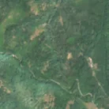
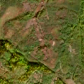

5,9 ha de pădure schimbată lângă Secu
Între 8 august 2026 și 18 august 2026, pe aproximativ 5,9 ha de pădure din municipiul Reșița, lângă Secu, județul Caraș-Severin, imaginile Sentinel-2 arată că vegetația a dispărut sau s-a schimbat puternic. În registrul public există o autorizație de tăiere pentru acest loc.
Autorizația de tăiere
probabil cu autorizație
Am găsit o autorizație de tăiere pentru locul ăsta, dar registrul nu ne lasă să confirmăm că acoperă exact tăierea pe care o vedem.
Ce se vede în poze: În «poza detaliată» zona marcată era acoperită în mare parte de pădure. În «după» apare pământ gol, maroniu, în fâșii, care continuă în afara zonei marcate spre nord, ca un coridor. Asta seamănă mai degrabă cu lucrări pe traseul unei linii electrice sau al unui drum decât cu o tăiere obișnuită.


Înainte și după: Copernicus Sentinel-2, 10 m pe pixel, conturul zonei cu portocaliu. Poza detaliată (Esri World Imagery) e de acum 1–4 ani: arată ce era acolo înainte, nu tăierea.
Pe scurt
- Identificator
- 20260818_45279_21959
- Locul
- Secu, municipiul Reșița, județul Caraș-Severin (SIRUTA 50790)
- Coordonate (centru)
- 45.27926, 21.95949 · Google Maps · OpenStreetMap
- Suprafața
- 5,9 ha (din pixeli de 10 m; ± câțiva pixeli pe margine)
- Ultima imagine cu pădurea întreagă
- 8 august 2026
- Prima imagine cu schimbarea
- 18 august 2026
- Imagini în care se vede schimbarea
- 12
- Cât de sigur e semnalul din satelit
- ridicată
- Autorizația cea mai apropiată
- APV 2600141400410 · Ocolul Silvic Resita, la 463 m de zonă
- Terenul
- în afara amenajamentelor silvice publicate (pășune, mal de apă sau pădure privată fără amenajament în registru)
- Garda Forestieră
- Timișoara
Dacă vrei să verifici sau să sesizezi
- Pădurile din județul Caraș-Severin sunt în grija Gărzii Forestiere Timișoara, care controlează tăierile și dă amenzile.
- Autorizația găsită în zonă e emisă de Ocolul Silvic Resita.
- Formularul Gărzii Forestiere Naționale primește sesizări și fără nume. Trimite linkul acestei pagini, coordonatele și pozele. Dacă tăierea e în desfășurare, sună la 112.
- Autorizațiile și transporturile de lemn se pot căuta în Inspectorul Pădurii.
Pagina arată ce se vede din satelit și ce scrie în registrul public; nu e o dovadă în sine.
Cum citezi zona
Linkul acestei pagini nu se schimbă. Dacă zona iese vreodată de pe hartă, pagina rămâne, cu data și cu ce știam despre ea.
Pădurea RO, zona 20260818_45279_21959: 5,9 ha, Secu, municipiul Reșița, județul Caraș-Severin; schimbare văzută din satelit între 8 august 2026 și 18 august 2026. https://iliemihai.github.io/padurea-ro/zona/20260818_45279_21959/ (consultat la [data]). Date: CC BY 4.0.
Datele zonei: GeoJSON · toate zonele: date deschise · licența CC BY 4.0.
Istoricul zonei pe hartă
Starea se poate schimba când registrul publică o autorizație sau când analistul vede poze mai bune. O ținem aici, ca un link citat să arate și ce spuneam atunci.
Pe hartă cel târziu din 5 noiembrie 2026.
- 5 noiembrie 2026 – azi · probabil cu autorizație
Detalii tehnice, pentru verificare
De ce acest nivel de încredere:
- văzută schimbată în 12 imagini diferite
- peste 3 ha
- AI-ul vede pădure dispărută
- în poze, zona se schimbă vizibil față de pădurea din jur
Ce a văzut analistul cu context: În imaginea AFTER WIDE, un coridor brun alungit continuă dincolo de conturul marcat, iar pădurea din jur rămâne verde, deci nu este vorba de culori de toamnă. Linia electrică la 0 m, drumul secundar la 27 m, forma alungită (raport 3,5) și suprapunerea de 0% cu autorizația de exploatare susțin ipoteza lucrărilor. Petele neregulate și urmele pe pantă din interior ar putea însă indica și o exploatare forestieră, așa că încadrarea este nesigură.
- Placa Sentinel-2
- 34TER
- NDVI de referință
- 0.87
- NBR de referință
- 0.64
- Scăderea în pădurea din jur
- 0.09
- Persistență
- 0.98
- NDVI / NBR după
- 0.35 / -0.023
- Analistul de zi (model)
- taiere · 0.9 · claude-haiku-5-5
- Analistul cu context (model)
- santier · 0.45
Cum se calculează fiecare: metodologia.
Pune harta zonei într-un articol
Copiază codul în articol (merge în majoritatea site-urilor de știri). Sau pune doar linkul: WhatsApp, Facebook și X arată singure poza zonei.